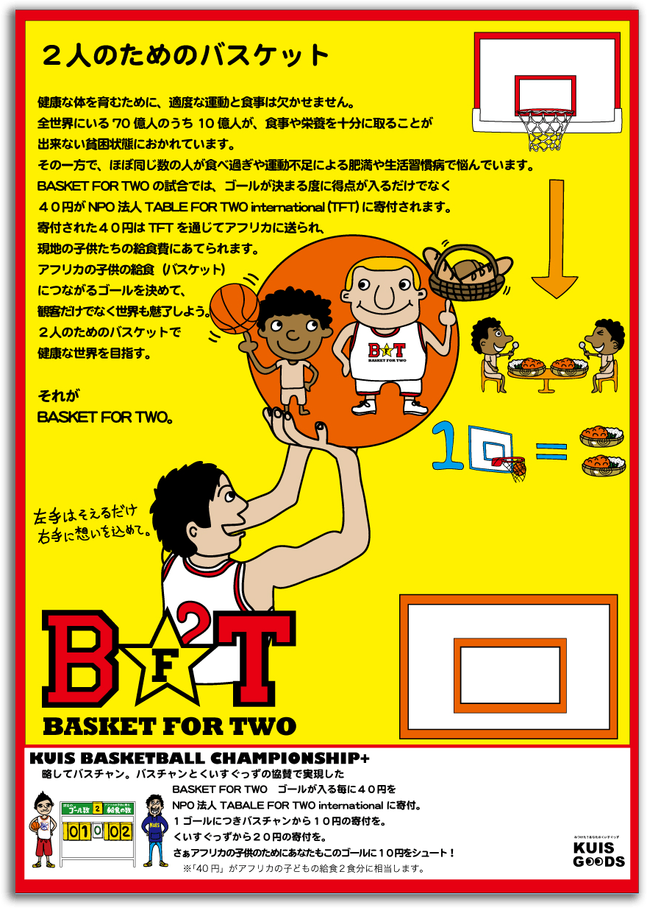

Table For Two
学食でも食を分かち合う
Table For Two(TFT)は、肥満や生活習慣病に悩む先進国と、飢餓や栄養失調に苦しむ開発途上国の「食の不均衡」を解消しようと、「二人の食卓＝先進国の私たちと途上国の子どもたちが、時間や空間を超えて食を分かち合う」ことをコンセプトに、に日本で創設され、国際的に広がりを見せる活動である。
、和田ゼミ社会起業研究会が主体となり、このTFTのコンセプトを学内に導入し、学食での「KUIS Tランチ」の普及活動が始動した。
イラスト:佐藤謙
学食でヘルシーメニューの「KUIS Tランチ」を購入してもらうことで、日本でのカロリーオフを実現し、同時に代金の内から20円が寄付となって、アジア・アフリカの子どもたちに給食1食分が届けられてカロリーオンが実現される仕組みである。TFT創設者/社会起業家である小暮真久の著書 『「20円」で世界をつなぐ仕事』に触発され、持続可能で誰もが参画できる社会貢献の仕組みを日常生活のなかに定着させることがテーマであった。
2011年11月、学内に初の「KUIS Tランチ」メニューが登場。Team T-Lunchのメンバーがポスターやランチの黒板などを制作し、日替わりでヘルシーメニューが展開された。
 構成:轟奈々代
構成:轟奈々代
● 第1回Tランチ（ 2011年11月7日～11日)●


＊月/水/金
お肉とお豆の
うまトマカレー
＊火/木
ふわふわ豆腐ハンバーグ
ピリッと和風仕立て
幕チャリでも「Tランチ」
の幕張チャリティ・フリーマーケット（幕チャリ）では、地域の商店と提携してヘルシー「Tランチ弁当」を販売した。学外からの来場者にもTFTのコンセプトを伝え、同時に寄付金を生み出すためである。


「にこにこランチBOX」は、たまご、ハンバーグ、ポテトサラダ、チキンハム、ツナ、野菜たっぷりの6種類。2日間で完売
、TFTのキャンペーン「世界食糧デー・ソーシャルアクション おにぎりアクション」に連動して、の学園祭で「KUIS おにぎりアクション」を展開した。おにぎりを食べる写真を投稿することで、企業協賛により5～10食の給食がアジア・アフリカに届けられる仕組みで、地域の商店とコラボした「ヨーロピアンおにぎり」が好評を博し、多くの写真が投稿されて完売に至った。

さらに、「くいすぐっず」とコラボしたガチャガチャを設置し、1回のトライで給食5食分が届けられるイベントも実施した。ルワンダ・バンダ村の子供たちに3年分の給食を届けようというTFTのクラウドファンディングに賛同して、和田ゼミ社会起業研究会とマッチングで寄付した。

Basket for Two
スポーツでTable For Two
1ゴールで 2食分の給食を届ける
 イラスト:佐藤謙
2010年秋には、バスケットボール大会を軸にパフォーマンスも楽しめる「ばすチャン+」が開催され、和田ゼミ社会起業研究会はコラボして「Basket for Two」を実施した。TFTプログラムの発想を応用したもので、バスケットボールの1シュートが決まるたびに、選手10円、観客10円、和田ゼミ社会起業研究会20円の寄付を募り、「1ゴールで2食分の給食を届ける」というマッチング募金活動である。観客からの寄付は自由意志に任せられたが、ゴールごとに複数の観客から寄付が寄せられ、スポーツを楽しみながら社会貢献できる新しい仕組みとなった。